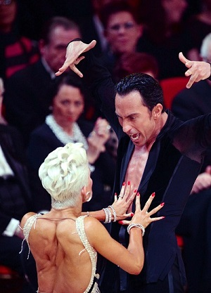
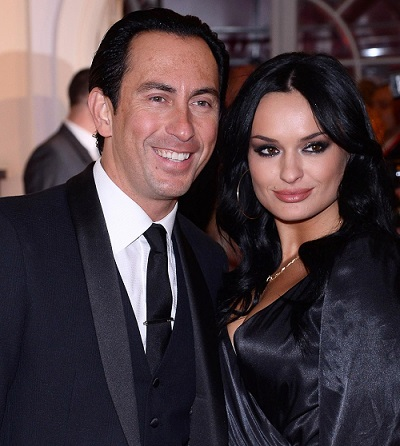
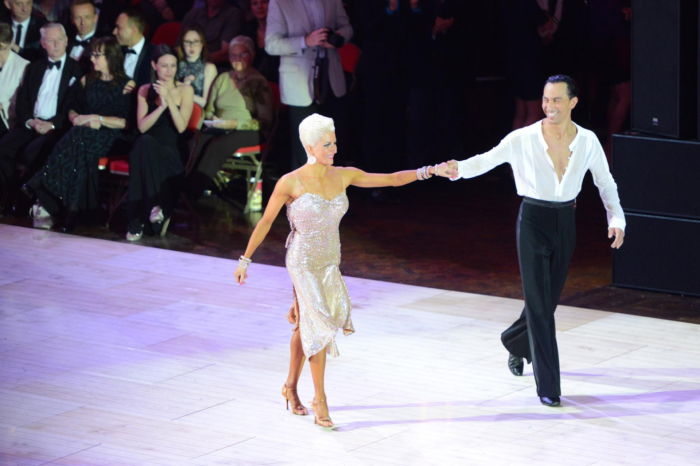

Michał Malitowski
Michał Malitowski (ur. 28 maja 1980 w Zielonej Górze) – polski tancerz tańca towarzyskiego, trener tańca, przedsiębiorca i osobowość telewizyjna. Trzynastokrotny mistrz Polski (w 1997, 1999, 2000[1], 2001[2] z Iwoną Golczak i w latach 2002–2010 z Joanną Leunis). Wicemistrz świata (2010[3], 2011) i mistrz świata par zawodowych w tańcach latynoamerykańskich (2008[4][5], 2009[6]). W latach 2002–2011 reprezentował Polskę, następnie – do zakończenia kariery turniejowej – tańczył w barwach Anglii.
O sukcesach sportowych wiemy wszyscy. Poznajmy jednak kilka szczegółów z życia prywatnego naszego mistrza!
Życie prywatne
W 2004 został magistrem animacji społeczno-kulturalnej Uniwersytetu Zielonogórskiego[7]. Temat jego pracy dyplomowej brzmiał: Style Ruuda Vermeya. Filozoficzne oblicza praktyka[7].
Do 2019 jego partnerką życiową była Joanna Leunis. Mają córkę, Lię Michele (ur. 11 marca 2016)[8][9]. 6 stycznia 2020 roku ożenił się z Yuliyą Phillips.[10]
Jak przebiegała kariera Michała od czasów młodego chłopaka ?
Przebieg kariery
Pierwsze taneczne kroki stawiał w klubie „Jacek” w zielonogórskim Domu Harcerza. Następnie reprezentował Szkołę Tańca „Gracja” Alicji Górskiej w Zielonej Górze. Wraz z Iwoną Golczak, z którą tańczył przez 15 lat, byli czterokrotnymi mistrzami Polski w tańcach latynoamerykańskich amatorów i zwycięzcami turnieju Blackpool Open (1999), w kategorii tancerzy do lat 21.
Od 2002 jego partnerką taneczną jest Joanna Leunis, a ich głównym trenerem jest dr Ruud Vermey.
Wpoczątkowych latach wspólnej kariery startowali w zawodach w kategorii południowo-amerykańskiego show, zdobywając dwukrotnie mistrzostwo świata w latach 2002-2003. Przez dziewięć lat z rzędu zdobywali mistrzostwo Polski w tańcach latynoamerykańskich zawodowców, a także siedmiokrotnie zwyciężyli na festiwalu Blackpool Open (2008-2014) i wygrali turniej International Open rozgrywany w londyńskiej Royal Albert Hall. Pięciokrotnie zwyciężyli w Otwartych Mistrzostwach Zjednoczonego Królestwa w Bournemouth. Od 2005 występują z wykładami i pokazami na Światowym Kongresie Tańca w Blackpool.
W marcu 2010 otrzymali nagrodę (jap. Sekai Dansu Taishō • Nippon Dansu Taishō; ang. Imperial Highness Prince Mikasa Award) japońskiego księcia Mikasy „za mistrzostwo i innowacyjność w tańcu oraz wkład w rozwój ruchu tanecznego w kraju”. Współtworzy szkołę tańca Pro-Am w Hongkongu, której zasadą jest łączenie tańca amatora z profesjonalistą podczas indywidualnych zajęć.
Był korespondentem i felietonistą tanecznego magazynu „Place for Dance” (2010–2011). Od 2012 jest związany z telewizją Polsat. Był jurorem w programach Got to Dance. Tylko taniec (2012–2013) i World of Dance Polska (2018), od 7 marca 2014 jest jednym z sędziów w programie Dancing with the Stars. Taniec z gwiazdami.
Miałem niezbyt udany początek. Pewnie wynikało to z tego, że nastąpiła zmiana przepisów odnośnie Strojów. Muszę przyznać, że ze zmienionymi strojami nie czułem się najlepiej. (...) Zbyt mocno to wszystko wziąłem do siebie. Wiem, że przez to pogubiłem się w technice.
Osiągnięcia i wyróżnienia
- World Professional Latin Championships 2008, 2009;
- European Pro Latin Championships 2007-2010;
- British Pro Open Championships 2005-2009;
- Polish Pro Latin Champ 2002-2010;
- World Professional South American Showdance Championship 2002-2004;
- European Professional South American Showdance Championship 2004-2005;
- WDC World Championship - Professional Latin, kwiecień 2011 – drugie miejsce;
- Japan International Championships 2009-2011
- Blackpool Dance Festival 2013 - pierwsze miejsce